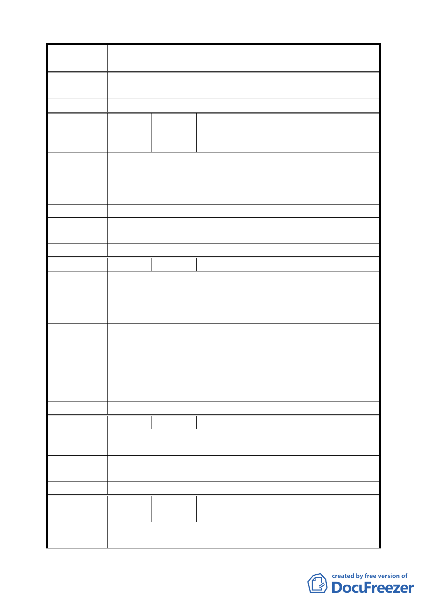

案 名 變更臺北市中正區齊東街附近住宅區為保存區及日式宿舍風
貌保存特定專用區主要計畫案
專案小組
審查結論
本地區將依市府公展方案辦理變更。
委員會決議 本案依文化局所提修正內容對照表修正通過。
陳國萍、陳慧玲、孫慧芳、詹聆幼、莊東
編
號6
陳情人 樺、梁金虎、鐘雪香、林英烈、周櫻真、
蕭茳、黃玉瑞、李佩玲、陳柏愷
一、 日本殖民時代的產物，有部分保留作為歷史見證即可。
陳情理由
二、 台灣是一個島國，在無法增加海埔新生地，更需正視這
些美其名為古蹟，實無貢獻的建築物，更何況是在寸土
寸金的臺北市內。
建 議 辦 法 古蹟指定一戶就夠了，趕快維修，其他由民間自行發展。
專案小組
審查結論
同編號 2。
委員會決議 本案依文化局所提修正內容對照表修正通過。
編
號7
陳情人 洪滔然
一、 李國鼎舊宅維持完整有保存意義，齊東街 53 巷幾乎殘
陳情理由
破不堪，不知為何成為古蹟？
二、 60 多年日式住宅就要稱為古蹟，中正區此種舊眷舍比比
皆是，難不成都是古蹟。
一、 李國鼎舊宅設為文化保存區尚有一點道理。
建議辦法
二、 如齊東街 53 巷設為日據台灣殘留文化保留區，何不將
中正區所有日式房舍皆予保留成為日本人侵華遺證特
區。
專案小組
審查結論
同編號 2。
委員會決議 本案依文化局所提修正內容對照表修正通過。
編
號8
陳情人 莊惠銓
陳 情 理 由 我們為整片大地荒置，難以接受，祈得改變現況。
建 議 辦 法 不如給一個開放的空間，公園亦可以接受。
專案小組
審查結論
同編號 5。
委員會決議 本案依文化局所提修正內容對照表修正通過。
編
號9
陳情人
僑果實業股份有限公司、僑協企業股份有
限公司
陳情理由
一、 臺北市政府公告指定臺北市齊東街 53 巷 2 號等 9 處日
式建築物為歷史建築，係以單棟之建築物為單位所為之
八